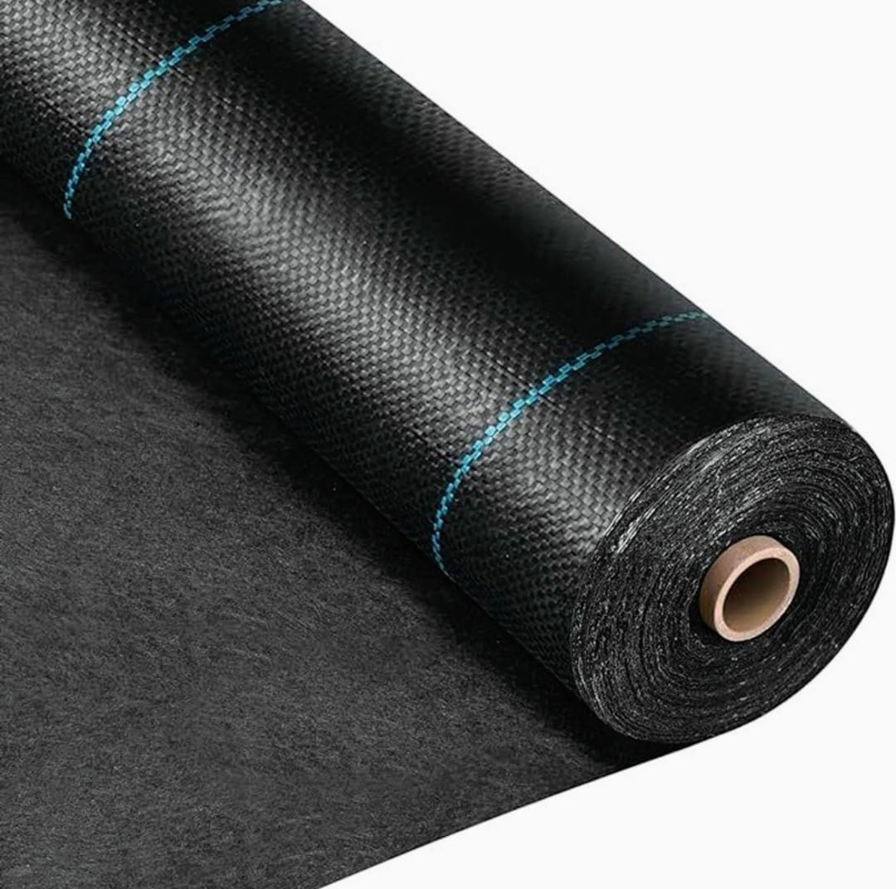
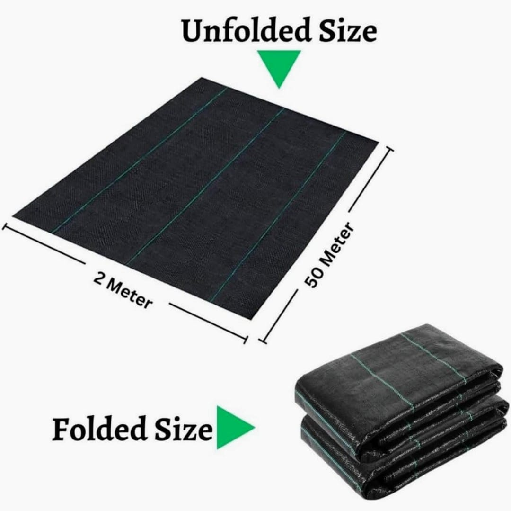
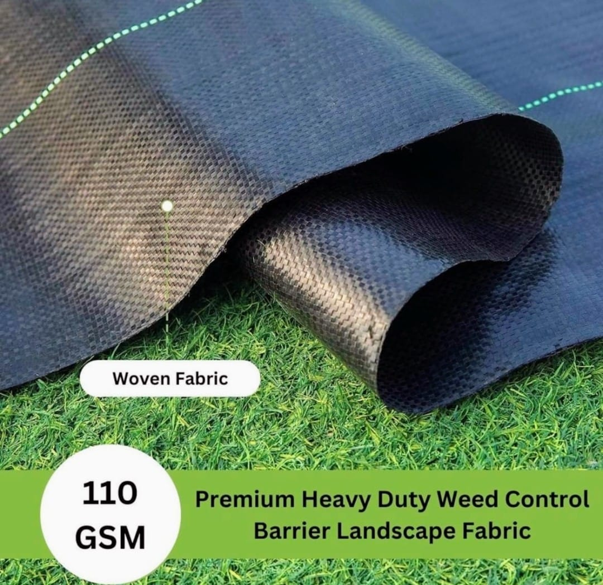
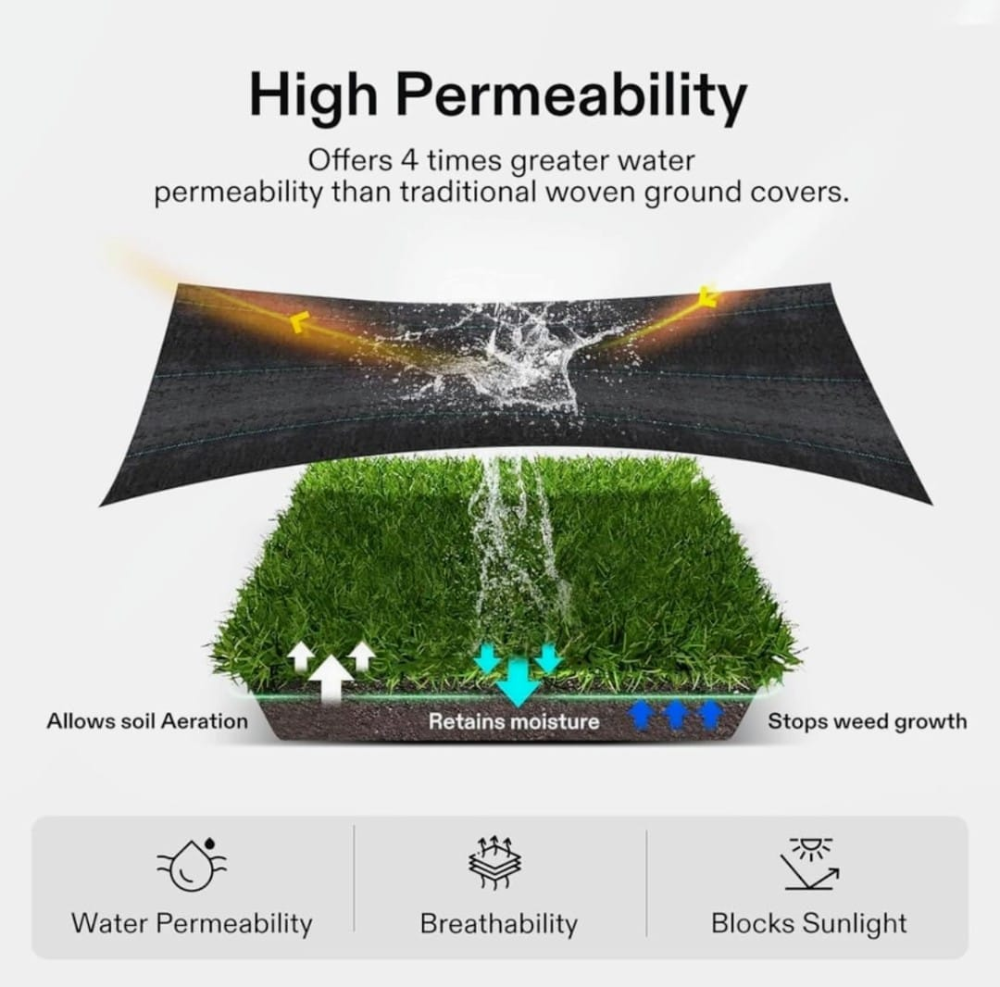
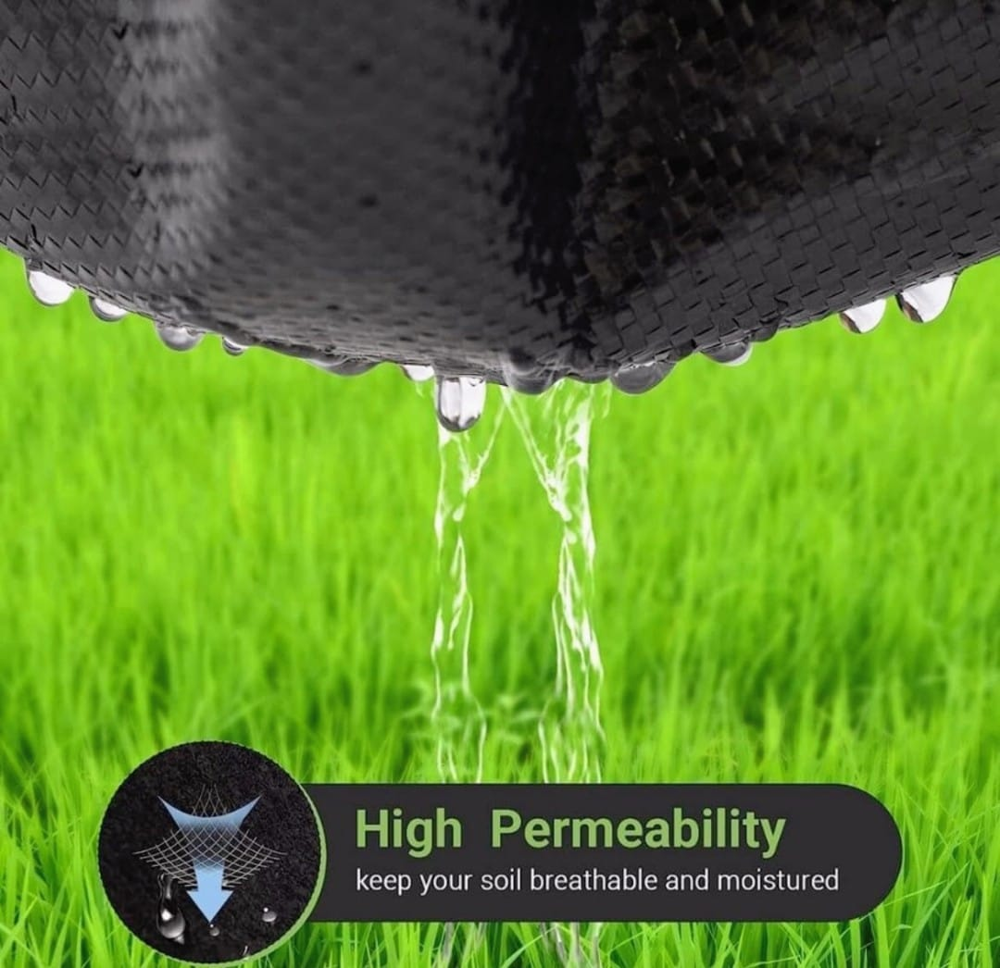
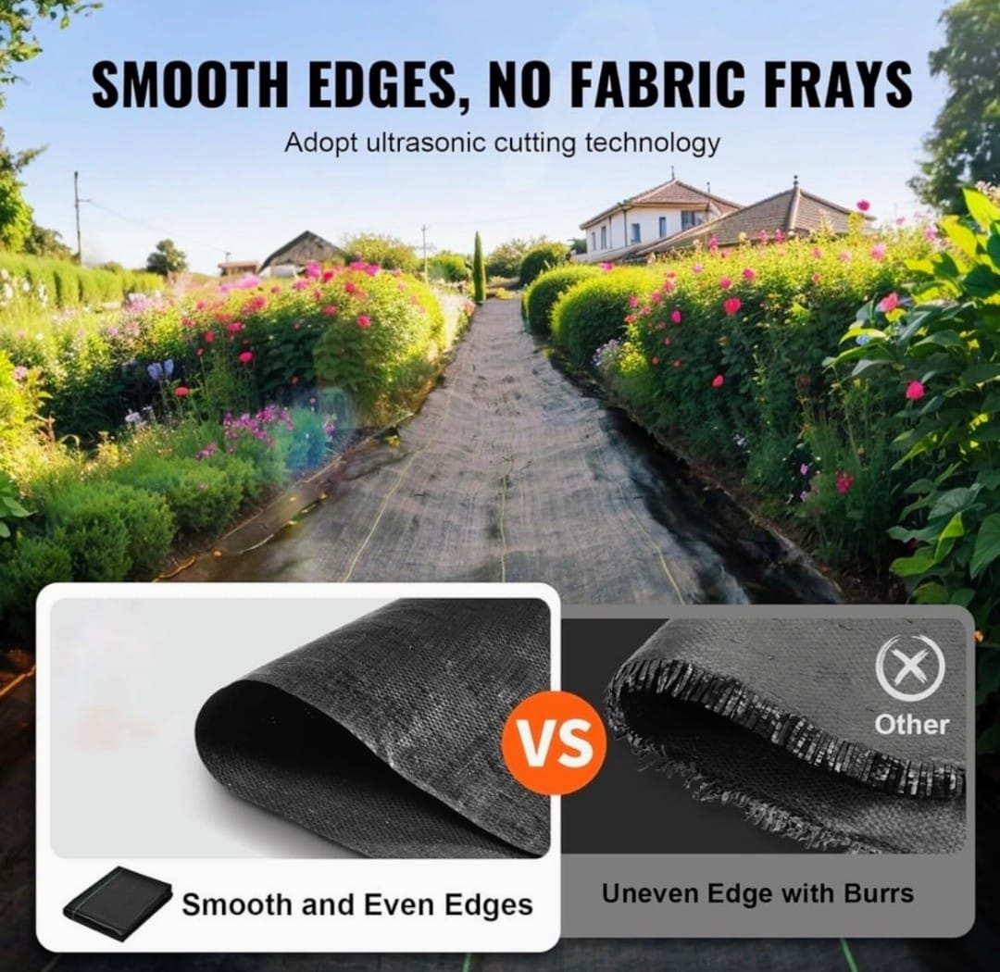
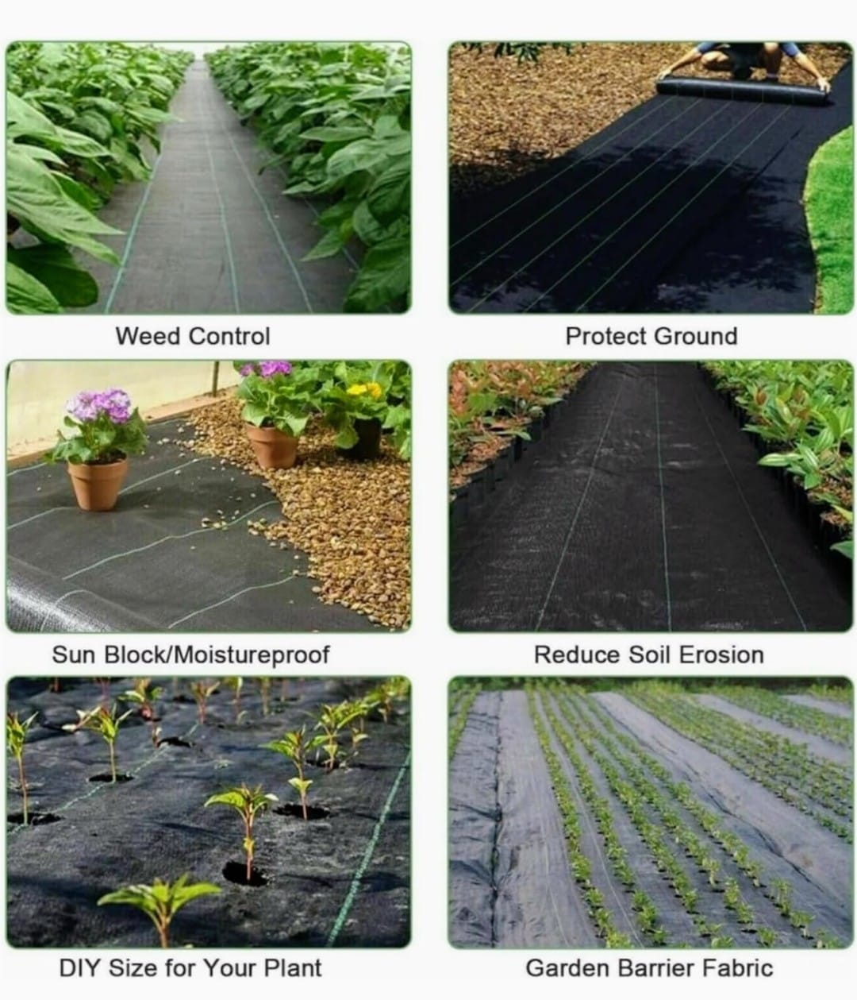
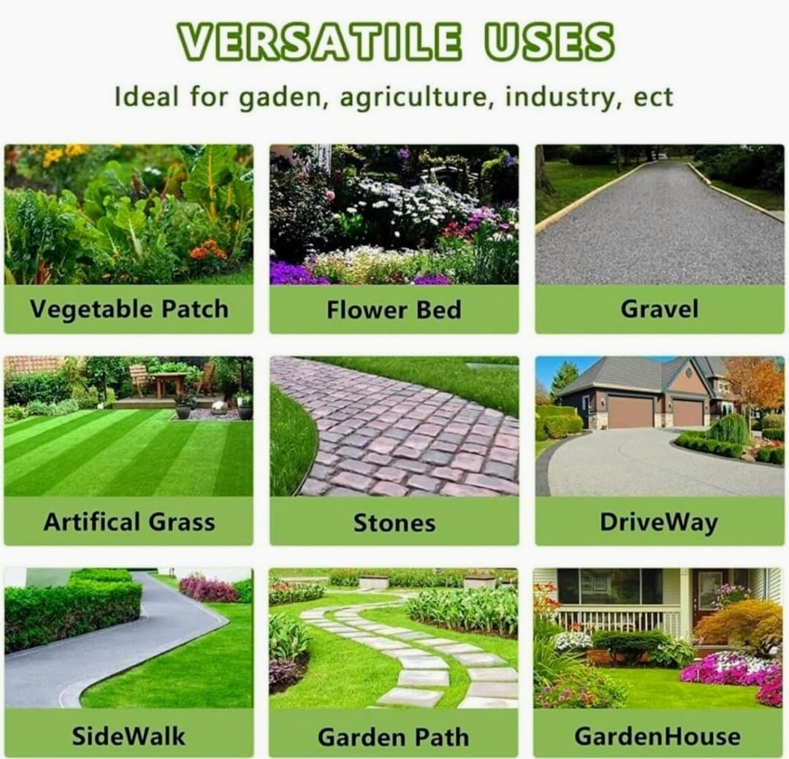

High-quality woven weed control fabric designed to suppress
unwanted weed growth while supporting healthy soil conditions.








Product Overview
Weed Mat is a woven polypropylene fabric used to control
weed growth by blocking sunlight while allowing water
and air to pass through to the soil.
It is widely used in agriculture, horticulture, nurseries,
and landscaping projects to improve crop yield, reduce
maintenance, and maintain soil health.
Key Features
Effective weed suppression
Allows water and air permeability
UV stabilized for outdoor durability
Strong, tear-resistant woven structure
Easy to cut and install
Specifications
Material: Woven Polypropylene (PP)
GSM: Multiple GSM options available
Colour: Black (with green line markings)
Form: Rolls
Usage: Weed control and soil protection
Applications & Use Cases
Agricultural farms and plantations
Nurseries and greenhouses
Gardening and landscaping projects
Pathways and ground cover areas
Horticulture and polyhouse setups
Best Suited For
Farmers and agricultural users
Nursery owners and landscapers
Horticulture and greenhouse operators
Commercial gardening and plantation projects
Selection Note
For Indian climatic conditions, GSM selection should be
based on exposure duration and foot traffic. Higher GSM
weed mats are recommended for long-term outdoor use and
heavy-duty applications, while lower GSM options are
suitable for seasonal crops and nurseries.
Commonly Used Along With
Drip Irrigation Systems
Landscape Pins and Anchors
Mulch and Soil Covers
Ready to order or need more details?Send us your requirement directly on WhatsApp — we respond within minutes.
What is weed mat used for?
Weed mat is used to suppress unwanted weed growth while allowing
air and water to pass through, making it ideal for gardening,
landscaping, and agricultural applications.
Does weed mat allow water to pass through?
Yes. Weed mats are designed to be permeable, allowing water and
nutrients to reach the soil while preventing weed growth.
Is weed mat suitable for Indian climatic conditions?
Yes. Weed mats are widely used in Indian agriculture and landscaping
due to their UV resistance and durability in heat, rain, and outdoor
conditions.
How long does a weed mat last?
Depending on GSM and exposure conditions, weed mats can last for
multiple seasons. Higher GSM mats offer longer service life.
Can weed mat be cut to required size?
Yes. Weed mats can be easily cut using scissors or blades to fit
specific bed sizes, plant spacing, or landscape layouts.
Is weed mat reusable?
Yes. With careful removal and storage, weed mats can be reused for
multiple crop cycles or landscaping seasons.